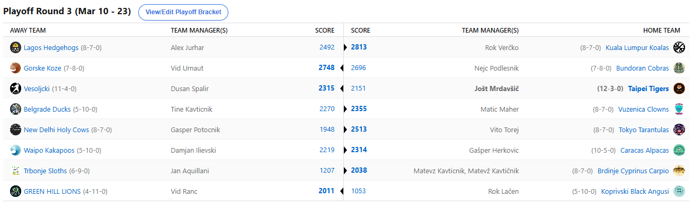

SEZONA 24/25
- Pravila in sistem tekmovanja
- Matchup1 (Oct 22 - Oct 27)
- Matchup2 (Oct 28 - Nov 3)
- Matchup3 (Nov 4 - Nov 10)
- Matchup4 (Nov 11 - Nov 17)
- Matchup5 (Nov 18 - Nov 24)
- Matchup6 (Nov 25 - Dec 1)
- Matchup7 (Dec 2 - Dec 8)
- Matchup8 (Dec 9 - Dec 15)
- Matchup9 (Dec 16 - Dec 22)
- Matchup10 (Dec 23 - Jan 29)
- Matchup11 (Dec 30 - Jan 5)
- Matchup12 (Jan 6 - Jan 12)
- Matchup13 (Jan 13 - Jan 19)
- Matchup14 (Jan 20 - Feb 26)
- Matchup15 (Jan 27 - Feb 2)
- Play-in (Feb 3 - Feb 23)
- Playoff 1 (Feb 24 - Mar 9)
- Playoff 2 (Mar 10 - Mar 23)
- Playoff 3 (Mar 24 - Apr 6)
2024/25 - Fantasy Koroška - sezona 8
PLAYOFF Round2 - SEMIFINALS (Feb 10 - Mar 23)
Poročilo kroga
Pa smo dočakali še zadnje dejanje 8. sezone NBA Fantasy Koroška in zdaj je že znano, da bomo v 8. sezoni dobili še 7. različnega zmagovalca. Vse to seveda priča o izjemni
izenačenosti managerjev in nepredvidljivosti lige in nobenega dvoma nimamo, da bo tako tudi v zadnjih dveh tekmovalnih tednih v sezoni 24/25.
Za prvo karierno zvezdico se bosta udarila Rok Verčko in Vid Urnaut.
Rok, ki mu je najvišja uvrstitev do letošnje sezone bila 4. mesto iz leta 2022/23 je tokrat na krilih Nikole Jo…. Se opravičujem, QuentHIMa Grimesa,
dokaj z lahkoto opravil z 2-kratnim šampionom Aleksom in s tem napravil človeštvu veliko uslugo. Hkrati si je s tem pridobil ekskluzivne
pravice repostanja Aleksovega storyja, ki bo kot posledica izgubljen stave prav z Verčkijem sledil danes in verjamem, da bo vsem zelo zanimiv.
Aleks se je sicer ponovno izkazal s kar 597 nastreamanimi točkami, a tokrat to pač ni bilo dovolj, ko mu nasproti ni stal nasprotnik s 15 O-ji.
V kolikor se vendarle uvrsti na stopničke, se bo Aleks po napredni formuli najtrofejnejših managerjev na prvem mestu izenačil s Hall of Famerjem Lužnicom.
Tam mu bo pot poskušal prekrižati lanskoletni prvak Cicko, ki mu vendarle ne bo uspelo obraniti naslova. Izguba Embiida in Foxa je bila vendarle prevelik zalogaj tudi
zanj in zdaj bo s svojim omejenim budgetom poskušal konkurirati na drugi strani pretežno zdravim Ježkom. Za Nejca je previsoko oviro predstavljal še
en novinec v finalih, Vid Urnaut. V 8. sezoni je vendarle našel free agent market in ga uspešno izkoristil in si priigral 497 dodatnih točk. Za primerjavo,
Nejc je priigral 402 točki in prav ta razlika je zadoščala za zmago in premierni finale našega climberja. Bo lahko (krajšo) odsotnost Jokiča izkoristil in
resno pariral Koalam v finalu bomo še videli, mu pa stavnice pripisujejo kvoto 2.75, medtem ko na drugi strani Verčko torej v manjši prednosti že računa na prvo titulo.
Ostalih matchupov ne bi posebej analizirali, naj samo povemo, da se bosta za 5. mesto udarila Maher in Dule, za sedmo bo potekal dvoboj med Vitom in Joletom, obračun v deseterici pa sklepata
Herko in Tajn. Po tem ko merita moči že 7 tednov, se pri tem ne ustavljata Ranac in Lačen, ki bosta dodobra obračunala za 15. mesto, vmes pa imamo še obračuna
Gepsa in Kavta za 11., ter Kupsa in Dilija za 13. mesto.
Sklepni matchupi letošnje sezone se kakopak začnejo že danes, srečno vsem, ki se še za karkoli borite in se vidimo že čez 26 dni na pikniku! Ne pozabite še na predictione,
feferoni so močni, gumiančke napihnjene in reši se kdor se more rdeče cone.